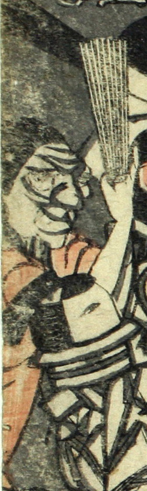

女の化物。赤い着物姿で、顔には深い皺が刻まれている。ささらのようなものを持っている。
著作者：江戸川北輝／出典：親書誌：U426_nichibunken_0074：本朝振袖之始素盞鳥尊妖怪降伏之圖；ホンチョウフリソデノハジメスサノオノミコトヨウカイゴウフクノズ／日付：2005／資源識別子：U426_nichibunken_0074_0016_0000
Copyright (c)2010- International Research Center for Japanese Studies, Kyoto, Japan. All rights reserved.